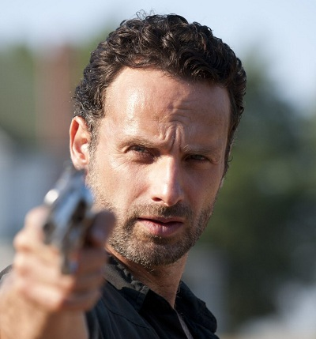
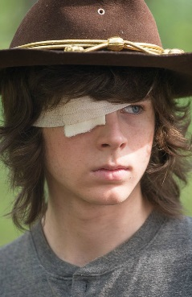
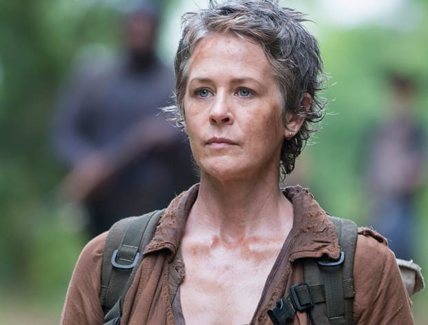
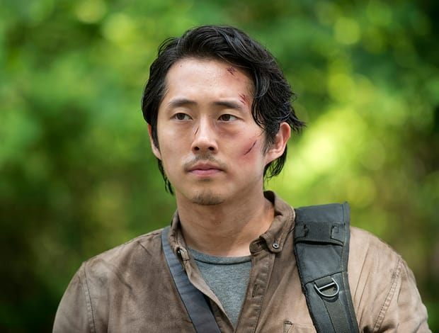
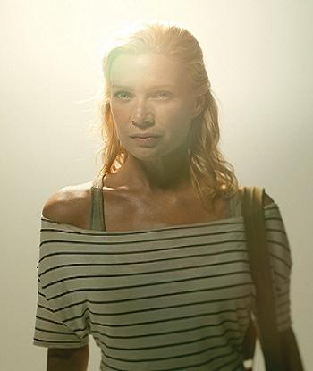
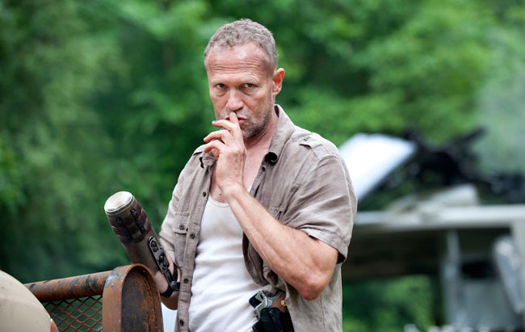
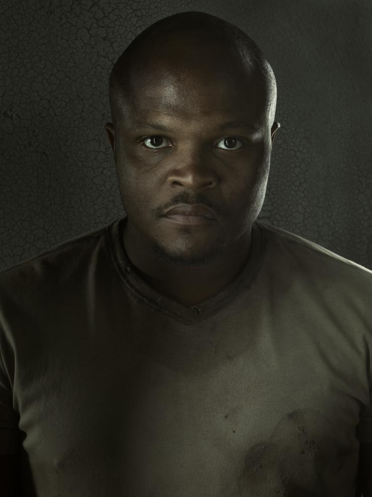
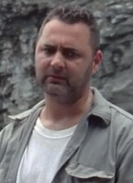

Rick Grimes
Rick Grimes is the protagonist and a survivor of the outbreak in AMC's The Walking Dead. He is a former sheriff deputy who was shot in the line of duty and fell into a coma, only to awaken and find himself in the midst of the apocalypse. He travels to Atlanta, Georgia, in search of his wife, Lori, and his son, Carl, who have traveled to Atlanta with his best friend, Shane Walsh. After reuniting with his family, along with discovering a group of survivors, he gradually becomes the de-facto leader in their search of a safe haven. He's the current leader of the Alexandria Safe-Zone and one of the co-leaders of The Militia, the others being Maggie Rhee, Ezekiel and later Jadis. As the series progresses, Rick gradually develops from an earnest, humble and moral individual into a hardened, ruthless and darker survivor. This nature places him into conflict with hostile forces seeking to exploit him for their own personal gain. Despite this, Rick holds a sworn devotion towards his group and will go towards great lengths to protect them from harm's way.
Daryl Dixon

Daryl Dixon is a main character and a survivor of the outbreak in AMC's The Walking Dead. He is the younger brother of Merle. Daryl is an expert at hunting, tracking, navigation, and observation. Due to his survival skills, Rick Grimes values him as an important member of the group. Following the deaths of Ed and Sophia Peletier, Daryl has developed a close bond with fellow survivor Carol Peletier. He later formed a brief yet close bond with another fellow survivor Beth Greene before her demise. He is the last surviving member of his family. Daryl begins the show as a brazen, impulsive redneck but develops himself an integral part of the group. His aggression is unprecedented, and it remains one of his most valuable assets, as well as one of his most noticeable.
Carl Grimes
Carl Grimes is the deuteragonist and a survivor of the outbreak in AMC's The Walking Dead. He is the son of Rick and Lori Grimes. During the initial outbreak, Carl believed his father to be dead, so he and his mother joined Shane Walsh to travel to Atlanta to the refugee camp. As time progresses, Carl slowly becomes hardened due to the severe loss of life and the environment around him, and he has shown to be more than willing to assist and protect the people he cares about. After reaching Alexandria Safe-Zone he forms a friendship, and eventual relationship, with a survivor, Enid.
Carol Peletier
Carol Peletier is a main character and a survivor of the outbreak in AMC's The Walking Dead. During the initial outbreak, she evacuates with her abusive husband, Ed, and her daughter, Sophia, to Atlanta. They eventually join a camp of survivors. In the events following her daughter's disappearance, Carol forms a close, loving bond with fellow survivor, Daryl Dixon. After discovering that her daughter was bitten and reanimated, Carol, now the last surviving member of her family, gradually builds inner strength, becoming increasingly proficient with weapons. She also gains medical experience through Hershel Greene's assistance. She later becomes the parental guardian of Lizzie and Mika after the death of their father, albeit briefly. Upon her arrival at the Alexandria Safe-Zone, Carol briefly had a romantic relationship with fellow Alexandrian Tobin and became an advisor to Rick Grimes following Hershel's death.
Glenn Rhee
Glenn Rhee is a main character and a survivor of the outbreak in AMC's The Walking Dead. He is the main supply runner for the Atlanta camp group, and he saved Rick Grimes from walker-infested Atlanta, bringing him back to his camp to reunite him with his family. Eventually, after the group stays on the Greene farm, Glenn formed a long lasting relationship with Hershel Greene's daughter Maggie and marries her. At the West Georgia Correctional Facility, which his group establishes as its base in the third and fourth seasons, he becomes a reliable council member but falls ill to a sickness that prevents him from doing his duty. After the prison assault that leaves the prison destroyed and many dead, Glenn escapes from the wreckage. While searching for his wife, he meets Abraham Ford and his group on a journey to Washington, D.C. He is also among the new recruits to go to the Alexandria Safe-Zone, where he became a supply runner.
Andrea
Andrea is a main character and a survivor of the outbreak in AMC's The Walking Dead. She and her sister, Amy, were saved by Dale Horvath during the initial outbreak and eventually joined a group of survivors at a camp outside Atlanta. She gains strength in being talented with firearms at the Greene family farm. After it is overrun, Andrea meets Michonne and is taken to Woodbury seven months later. At Woodbury, Andrea becomes involved in the town's affairs, stepping up when leadership was lacking and later engaged in a relationship with Philip Blake, better known as The Governor until his true motivations are exposed. She finds herself caught in the crossfire between her previous group and the town of Woodbury, opting for a peaceful resolution between the two conflicting sides.
Lori Grimes

Lori Grimes is a main character and a survivor of the outbreak in AMC's The Walking Dead. She was the tritagonist of the series from Season 1 to Season 3. She is the late wife of Rick Grimes and mother of Carl and Judith Grimes. Believing Rick to be dead, she joined Shane Walsh in traveling to Atlanta, and counted on him to keep her and Carl safe, during which she began a sexual relationship with him.
Morgan Jones

Morgan Jones is a main character and a survivor of the outbreak in AMC's The Walking Dead. He is the husband of Jenny, the father of Duane, and the last known surviving member of the Jones family. While evacuating, Jenny was bitten and succumbed to the infection, causing Morgan and Duane to seek refuge in King County, Georgia, where the Grimes family lived. After the loss of his son (who was bitten by Jenny), Morgan was living a life in denial, hoping to redeem himself by killing the invasive walkers. At the end of "No Sanctuary", it is revealed that Morgan has partly redeemed himself and is on a journey to find Terminus before Rick Grimes's altered sign turns him away. After stumbling across a map leading to Washington, D.C., with a familiar name on it, he heads north until he crosses paths with Daryl Dixon and Aaron, recruiters for the Alexandria Safe-Zone, who bring him to the town where he is reunited with his long lost friend, Rick Grimes.
Shane Walsh

Shane Walsh is a main character and later an antagonist as well as a survivor of the outbreak in AMC's The Walking Dead. He was Rick Grimes's partner at the King County Sheriff's Department and his best friend since high school. After the initial outbreak, Shane began to harbour feelings and an obsession for Lori, Rick's wife. He later became one of the main members of the survivor group camped outside Atlanta and also after leaving the camp and finding Hershel Greene's farm. He serves as the deuteragonist of Season 1 and later the primary antagonist of Season 2.
Dale Horvath

Dale Horvath is a main character and a survivor of the outbreak in AMC's The Walking Dead. During the initial outbreak, Dale saved Andrea and Amy, eventually finding a camp of survivors.
Merle Dixon
Merle Dixon is a main character and a former antagonist as well as a survivor of the outbreak in AMC's The Walking Dead. Having survived along with his younger brother, Daryl, he eventually joined a group of survivors outside of Atlanta, Georgia. After being abandoned on a rooftop in Atlanta, he was found by a man known as The Governor and was taken to Woodbury. He served as the secondary antagonist for the first half of Season 3 before rejoining Rick's group.
Sophia Peletier

Sophia Peletier is a survivor of the outbreak in AMC's The Walking Dead. She was the daughter of Ed and Carol. During the initial outbreak, Carol, Ed, and Sophia evacuated to Atlanta for safety, but ended up joining a camp of survivors. While at the camp, Sophia sparked up a friendship with Carl Grimes and Eliza Morales.
Theodore Douglas
Theodore Douglas, better known as T-Dog or simply T., is a survivor of the outbreak in AMC's The Walking Dead. During the initial outbreak, he traveled to Atlanta and eventually joined a camp of survivors. T-Dog is a kind man willing to fight for his allies.
Amy
Amy is a survivor of the outbreak in AMC's The Walking Dead. She and her sister Andrea were saved by Dale Horvath during the initial outbreak and eventually found a camp for survivors.
Jacqui

Jacqui (pronounced jack-E) is a survivor of the outbreak in AMC's The Walking Dead. As a member of the Atlanta camp, Jacqui helps out with the chores and participates in supply runs.
Morales

Morales (first name unknown) is a survivor of the outbreak and later an antagonist in AMC's The Walking Dead. During the initial outbreak, Morales was a member of the Atlanta Survivor Camp with his wife, daughter, and son, having evacuated his family to the city to find safety. After a severe walker attack brings light to the dangers of staying at the camp, Morales and his family depart from the Atlanta group to head for Birmingham, Alabama. After losing his family, Morales lost his mind and ended up in the D.C. area where he joined the Saviors.
Jim

Jim is a survivor of the outbreak in AMC's The Walking Dead. During the initial outbreak, Jim and his family were trying to escape Atlanta when his wife and kids were devoured. Eventually he finds and joins a camp.
Ed Peletier
Ed Peletier is an antagonist and a survivor of the outbreak in AMC's The Walking Dead. During the initial outbreak, he evacuated to Atlanta with his abused wife Carol Peletier and his daughter Sophia Peletier. They eventually found a camp of survivors and joined their group.